[The (In)visible City: A Data-informed Analytical and Design Methodology in Urban Functions]
Key Words: Land Use; POI; Social Media; City Design
[FULL ARTICLE] Project in Progress.
This post might come from a pre-copy-editing or a post-print author produced file of an article accepted for publication. For the efinitive publisher-authenticated version, please refer to the full article link.
Highlights
Using social media data and natural language processing methods, we are comparing different representations of urban functions to help multiple stakeholders understand cities in a deeper way.
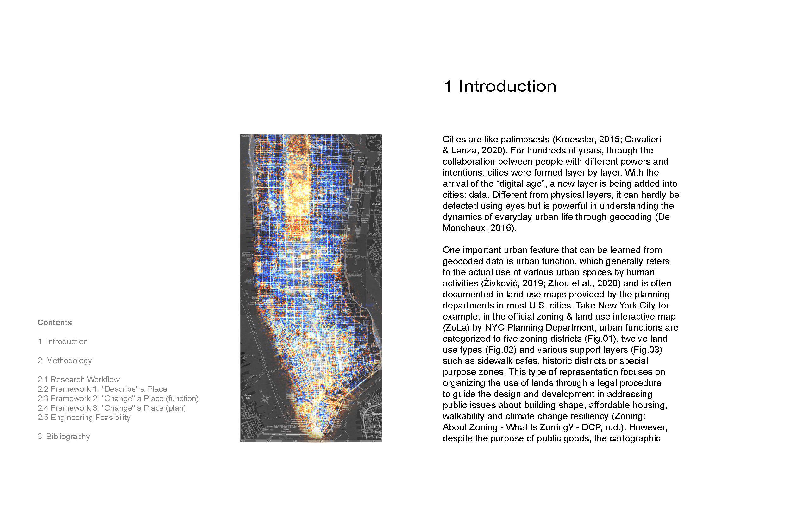
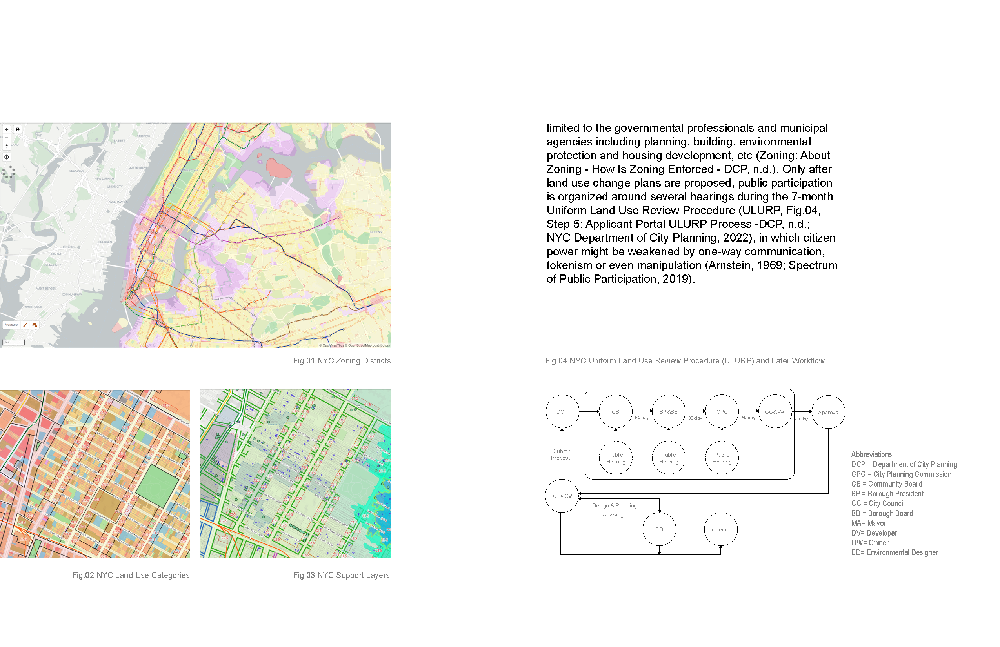
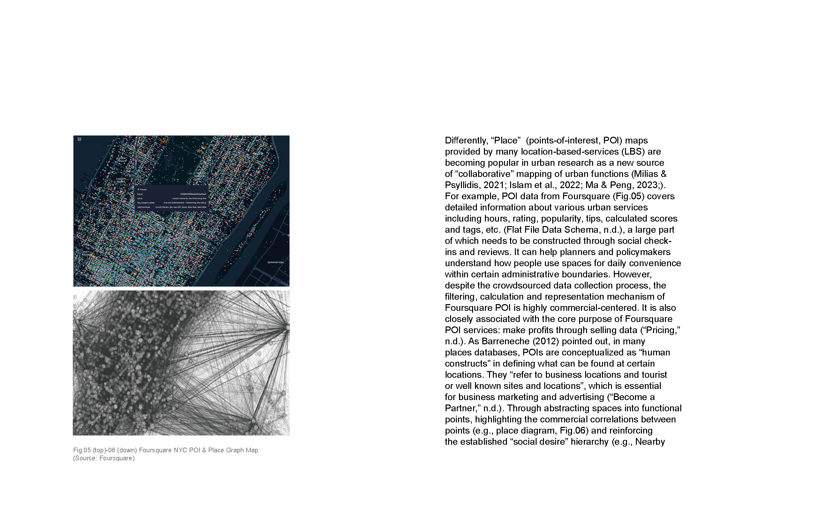
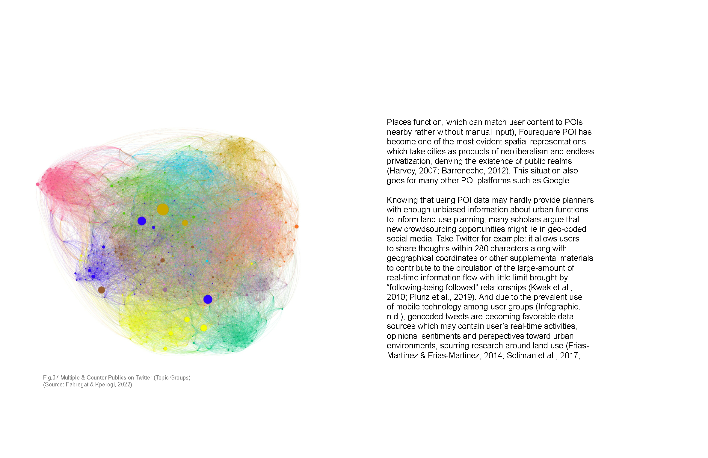
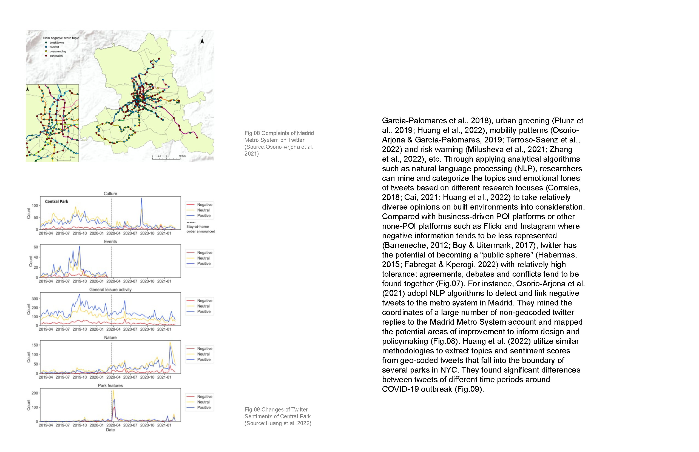
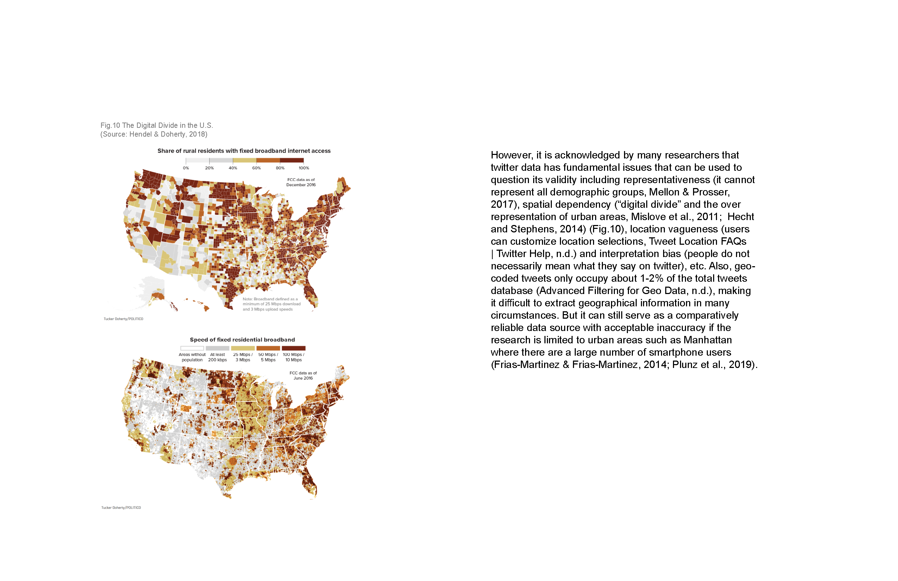
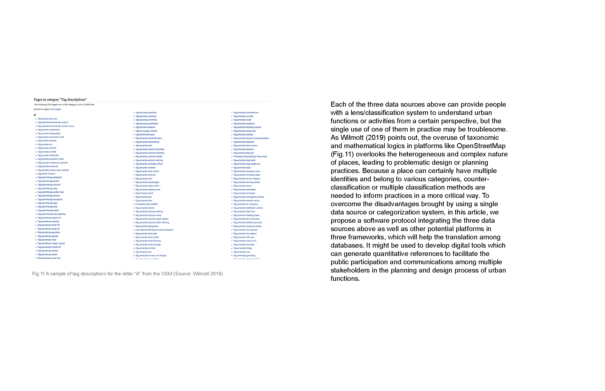
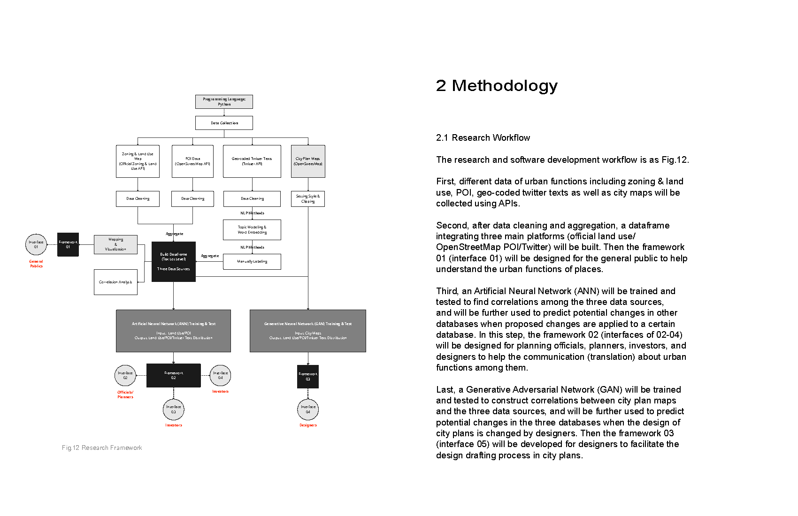
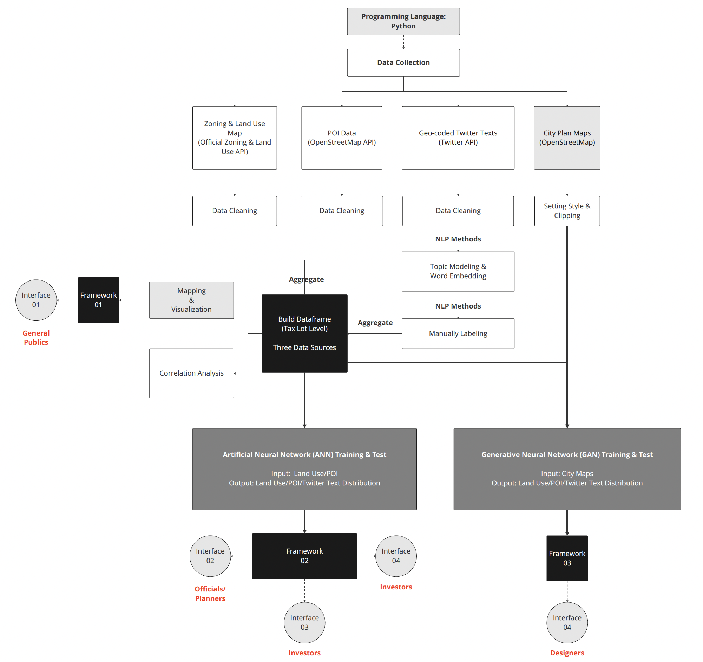
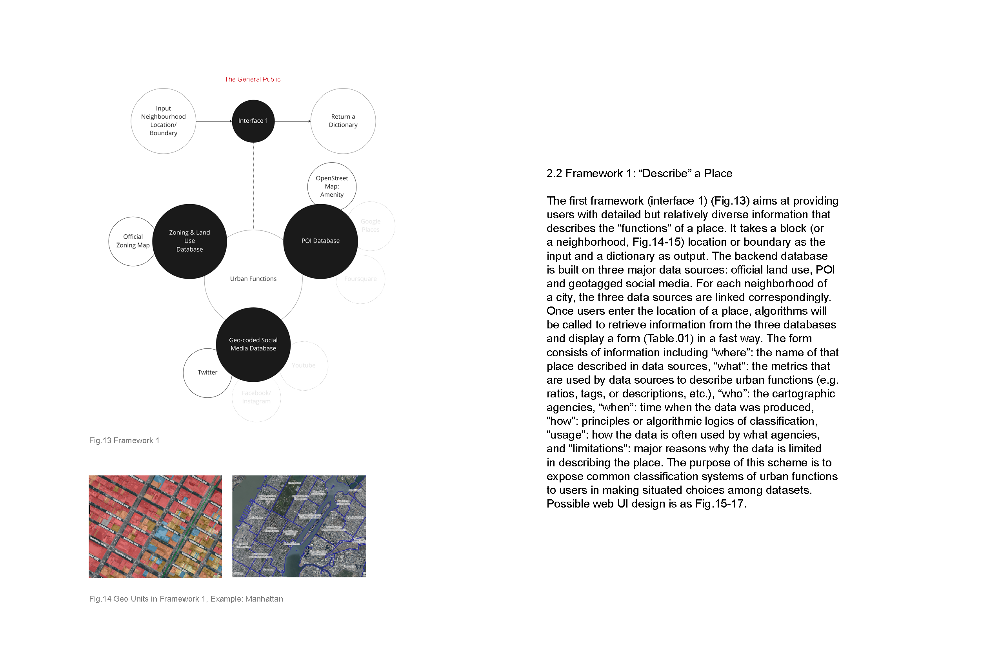
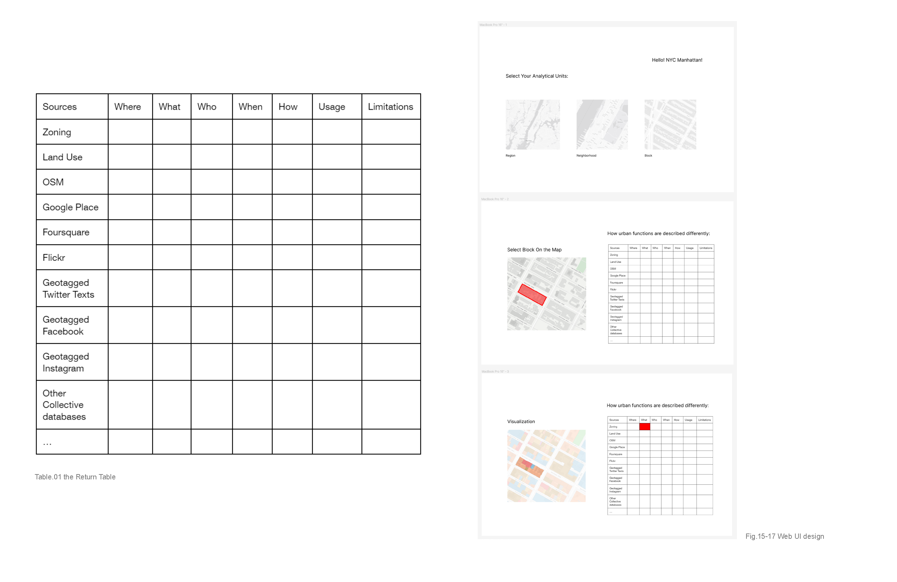
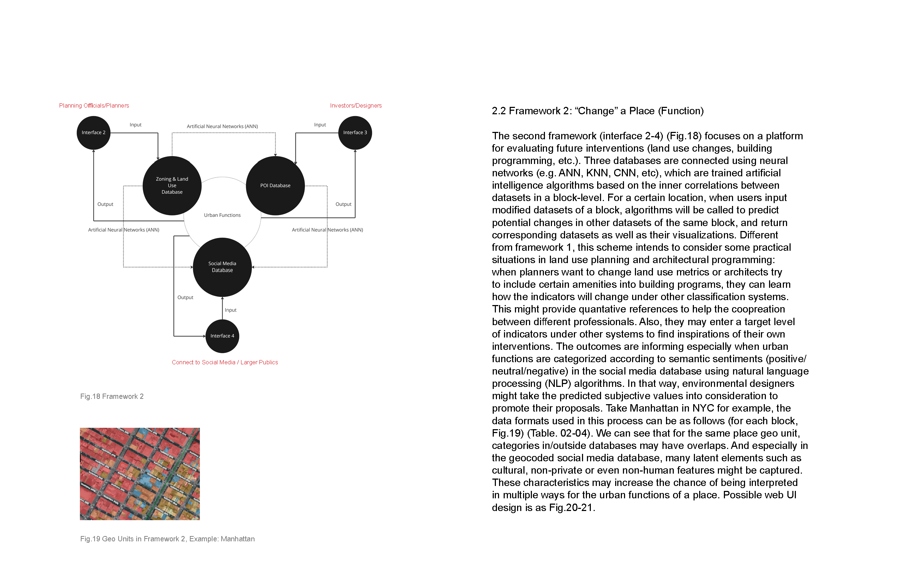
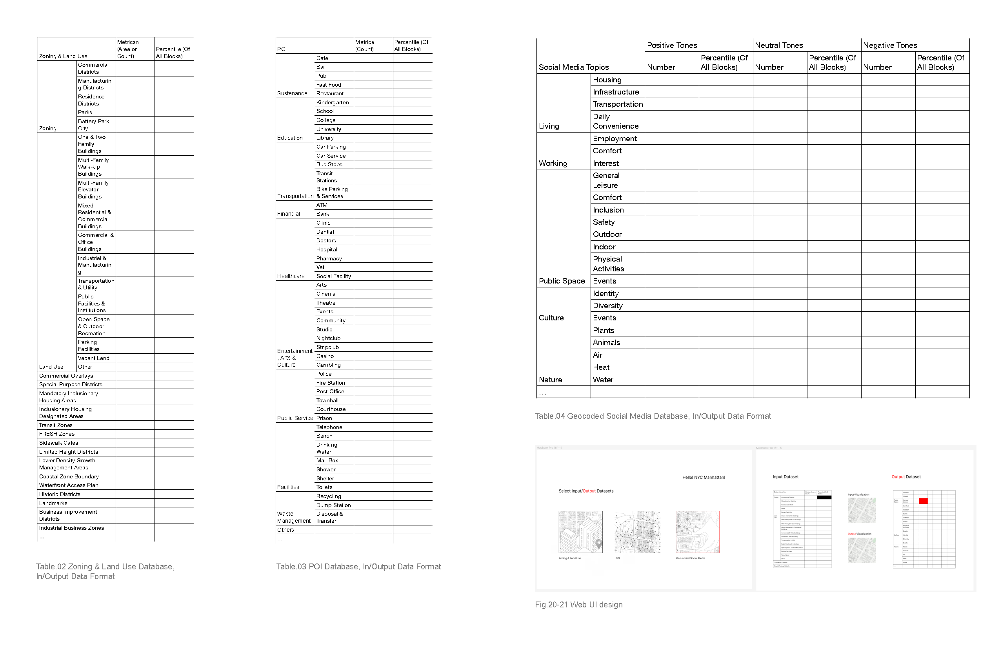
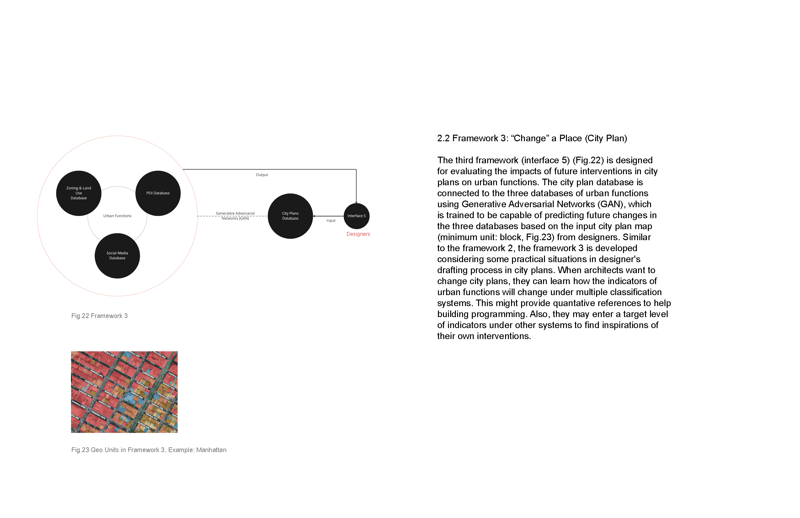
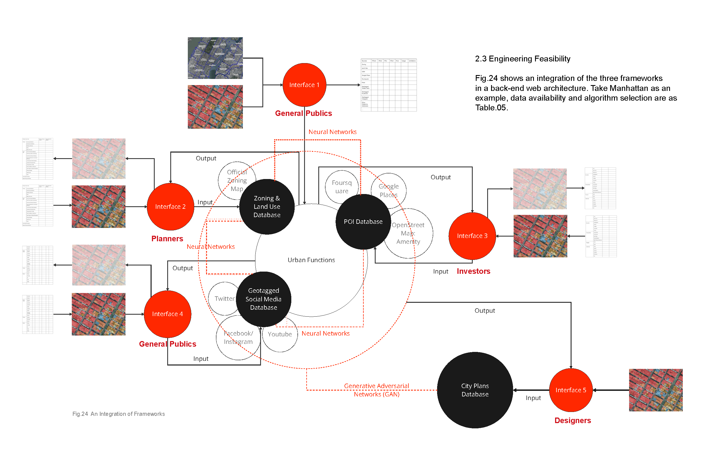